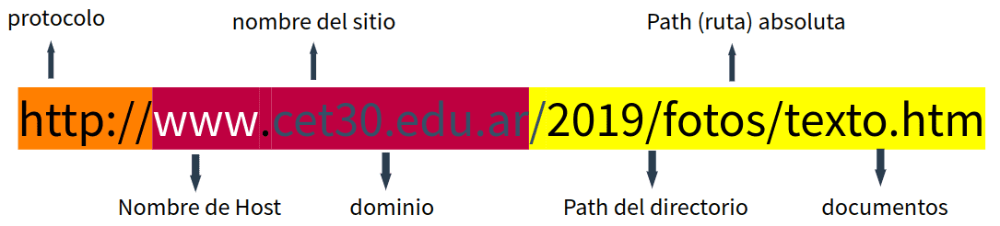

Trabajo Practico Nº2: URL
De: Saucedo Leandro
1.1- ¿Qué es una URL?
Uniform Resource Locator o URL es una cadena de texto especifica de un recurso que se usa para acceder a el, tambien se les dice enlace o direccion WEB.

1.2- ¿Qué es una URL absoluta?
Una URL absoluta muestra la ruta completa hacia un documento, se usa para aquellos que no estan en el servidor propio.
1.3- ¿Qué es una URL relativa?
La URL relativa describe la ruta a un archivo relativo al actual documento, se usa para documentos locales.

1.4- ¿Cuál es la diferencia entre una URL relativa y una URL absoluta?
La diferencia es que la absoluta muestra la direccion completa y se usa para documentos de otro servidor, mientras que la relativa solo muestra la ruta y es para documentos locales.
1.5- Crear tres enlaces absolutos a tres recursos. Los recursos deben ser PDF, PNG, TXT
Don Quijote de la Mancha
Ok I pull up
Autos usados
1.6- ¿Qué es un directorio?¿Qué relación hay con una carpeta?
Un directorio es un contenedor virtual donde se almacenan archivos o mas directorios. Se relacionan porque cumplen la misma funcion.
1.7- En la estructura de un proyecto web, ¿a qué se llama directorio raíz?¿Con qué símbolo se representa?
Un directorio raiz es el directorio/carpeta principal el cual contiene dentro los demas archivos del proyecto. Se representa con un /.
1.8 Un archivo XLS que deseamos enlazar se encuentra alojado en el servidor de nuestra institución educativa, dentro de la carpeta de recursos compartidos llamada "documentos". Dentro de esta carpeta, hay otra subcarpeta llamada "excel", donde se encuentra específicamente el archivo que necesitamos, llamado "datos_estudiantes.xls". Sabiendo que el protocolo utilizado es https y nuestra institución es el CET Nº30. Armar la url absoluta para dicho archivo.
La URL absoluta es https://campus.cet30.edu.ar/documentos/excel/datos_estudiantes.xls
1.9- Una empresa cuyo dominio es xyzlt.com tiene su logo en archivo gif. El logo está identificado bajo el nombre logo. Se encuentra en un host llamado data. Todos los archivos multimedia están en un directorio llamado asset que organiza dentro según el tipo de archivo, para imágenes se utiliza img, para pdf se utiliza pdf y para audios se utiliza audios. Armar la url absoluta.
La URL absoluta es data.xyzlt.com/asset/img/logo.gif
1.10- ¿Cuál es el propósito de la etiqueta anchor?
El propósito de esta etiqueta es crear enlaces a otras web y/o recursos ubicados en el mismo proyecto u otro servidor.
1.11- ¿Qué atributo se utiliza en la etiqueta anchor para especificar la URL a la que debe enlazar?
Se utiliza el atributo "href" para especificar la URL.
1.12- ¿Qué sucede si el atributo "href" en la etiqueta anchor está vacío?
Si el atributo "href" se encuentra vacio abre la pagina actual una y otra vez.
1.13- ¿Cuál es el uso del atributo "target" en la etiqueta anchor y cuáles son los posibles valores que puede tener?
Se usa para especificar donde se abrira el enlace, en una pestaña, ventana, iframe. Sus posibles valores son:
self: Se abre la URL en la pestaña actual.
_blank: Muestra la URL en una nueva pestaña o ventana.
1.14- Entonces ¿qué es un hipervínculo?
Se le llama hipervínculo a la URL dentro de la pagina que nos redirige a otros recursos de la web, ya sea local o en otro servidor.
1.15- Actividad práctica:
📚 Organizar las materias de 4to año
📁 Paso 1: Crear la carpeta "Materias" en el proyecto actual 📁
🤝 Paso 2: Agrupar materias en dos categorías 🤝
Dentro de la carpeta "Materias", crea dos grupos para las materias de 4to año: "Aula" y "Taller". De esta manera podemos categorizar las páginas.
📄 Paso 3: Crear páginas para cada materia 📄
En cada materia, crear una página. Cada página debe tener:
🔹 Título de la materia
🔹 Enlace para volver al inicio
📊 Paso 4: Crear el archivo index.html 📊
En la carpeta "Materias", crea un archivo llamado `index.html`. Aquí irá el listado de todas las materias de 4to año, organizadas por los dos grupos que creaste.
En el listado, agrega un hipervínculo para cada materia que te lleve directamente a la página correspondiente.
Utiliza las etiquetas que hemos visto como em, strong, img y otras 🎉
¡Éxitos!
Actividad 15
:quality(85)/cloudfront-us-east-1.images.arcpublishing.com/infobae/MRRSGASO3FAGBGC57XGDJPPPCM.jpg){kind=link}